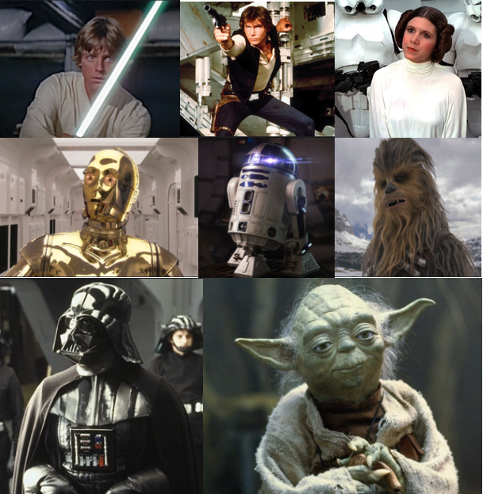

Main Characters

Mark Hamill as Luke Skywalker
Harrison Ford as Han Solo
Carrie Fisher as Leia Organa
Anthony Daniels as C-3PO
Kenny Baker as R2-D2
Peter Mayhew as Chewbacca
David Prowse as Darth Vader
Frank OZ as Yoda
choose one of following to see episode plots:
Mark Hamill as Luke Skywalker
Harrison Ford as Han Solo
Carrie Fisher as Leia Organa
Anthony Daniels as C-3PO
Kenny Baker as R2-D2
Peter Mayhew as Chewbacca
David Prowse as Darth Vader
Frank OZ as Yoda
Vader pursues the rebels to a new hideout on the ice planet of Hoth. Luke is visited by the spirit of Obi-Wan and told to go to Dagobah to study the ways of the Force with Yoda. Han and Leia barely escape and head to the Cloud City run by Han's scoundrel friend Lando Calrissian. But it's a trap as the Falcon was tracked by Boba Fett - Jango's revenge-seeking son - who alerts Vader what's going on. He shows up and captures Leia and freezes Han in carbonite so Boba Fett can take him to Jabba. Vader has little interest in Solo because he doesn't have the Force. Lando helps Leia escape, but then Luke bails on his training and shows up, where Vader reveals that he's Luke's father. Luke barely escapes. Lando and Chewbacca head to Tatooine to free Han and Luke and Leia wait for the next movie.